Bloom is an eerie gardening game where you grow strange plants to feed the creature keeping you captive. Inside your greenhouse you water, upgrade and harvest your plants. Outside you fight wild plants for the parts you need, and search for the cores that will earn you your freedom.
Plants are the core of Bloom, and after the first sprint I took over all plant related work. Sjoerd, our programming lead, had set up the first attacking state and behaviour loop before moving on to UI. By the end of the project almost all of that original blueprinting had been rewritten, but his clean state-based setup set the quality bar for everything I built after it.
Every plant is based on a design by Jeroen, our technical designer. It describes four growth stages per plant, what each stage needs to grow, what it drops and how it attacks. Whenever something was unclear or missing, I went to him directly instead of guessing.
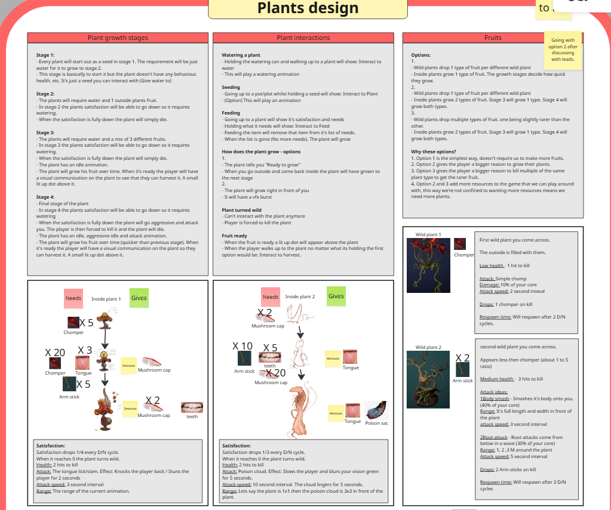
All plants share one base blueprint that handles attacking, health and death. The wild plants outside inherit directly from it. The plants inside the greenhouse inherit from a second base blueprint that adds everything a tended plant needs: idle behaviour, water levels, fruit growing and upgrading.
Each growth stage of an inside plant is its own child blueprint. That sounds like a lot of blueprints, but it meant health, fruit, upgrade costs and grow speed could be tuned per stage just by changing the values on that stage. No logic had to be touched. The structure itself took a few iterations to get right, but this is where it ended up:
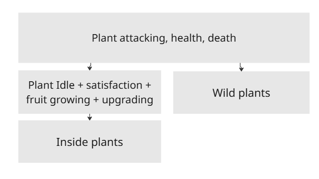
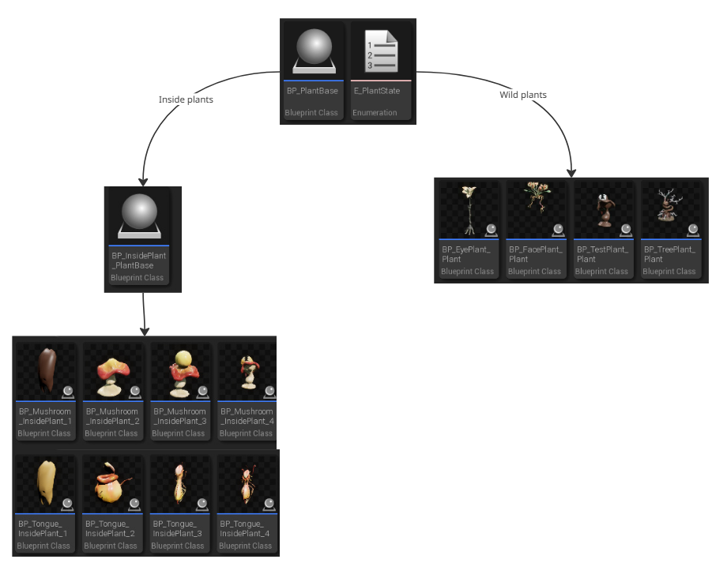
Bloom has several different pots, and some of them have room for more than one plant. Instead of writing planting logic per pot, I made a single pot-slot blueprint that holds all of it. The pots themselves only contain a mesh, a collider and as many pot-slots as the artists want, placed wherever they want them as child components.
A pot-slot starts out as an interactable. When the player gives it a seed, it spawns the matching plant and stops being interactable itself, so the player interacts with the plant instead. The slot keeps track of its plant, and the moment that plant no longer exists the slot opens up again for planting.
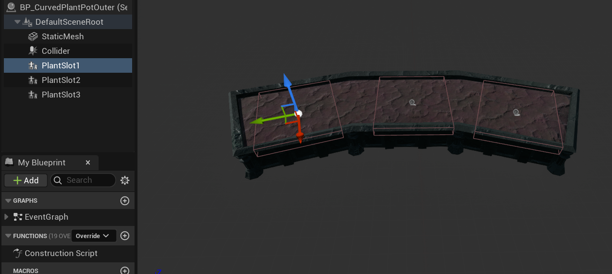
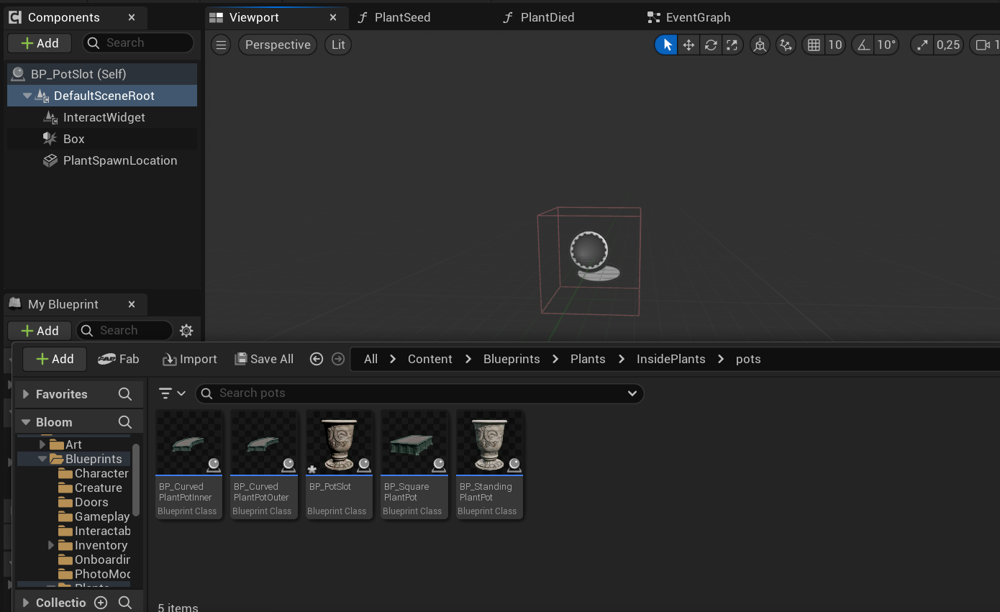
Watering a seed makes it sprout into its first growth stage. From then on each plant holds three droplets of water. At first water drained over time, but once the team decided how the switch between day and night would work, water only drains when the player goes outside. The droplet UI above the plants was made by Flemming.
When the water runs out, one of two things happens. A young plant simply dies. A plant in its final stage turns aggressive instead, behaving like a wild plant, and the player is forced to kill it.
Every stage has a list of items it needs to grow into the next stage, mostly parts dropped by wild plants.
When the player has everything and interacts with the plant, VFX plays and the plant is swapped for the blueprint
of its next stage, which comes with its own list of requirements.
Showing those requirements to the player needed a pop-up. I built the pop-up functionality into the interaction system
and then handed the visual side over to Flemming, since it was very similar to UI he had already made.
From the middle stage onward a plant grows fruit. Fruit grows every 25 seconds while the player is inside,
and is guaranteed to be ready whenever the player comes back from outside.
Ripe plants sparkle until they are harvested, and final stage plants give multiple types of fruit.
This system went through a few rounds with Jeroen. First fruit only grew over time.
Then, together with the water change, it grew instantly when the player went outside.
Later Jeroen wanted fruit to keep growing while the player is inside as well, so in the end it does both.
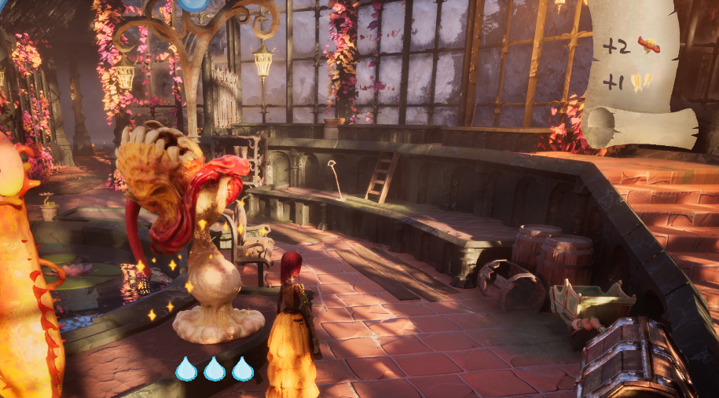
Wild plants are always agitated. They play an angry idle animation and keep turning to face the player. When the player enters their attack range, the plant stores the player's position at that moment, turns towards it, and attacks once it is facing that spot. This gives the player a window to dodge.
Damage is dealt through a hurt box that only turns on through an animation notify, placed on the exact frame the attack should land. This keeps the damage in sync with what the player actually sees. There are three wild plants: the face plant, the tree plant and the eye plant. The eye plant was only modelled in week 7, but we still got it fully into the game. Its attack freezes the player for two seconds and deals 10% damage.
The attacks changed a lot based on playtesting. In sprint 3 the visual artists and I thought the face plant's animation suited two hits, so I made it deal damage in two places at different times. A week later Jeroen found this made the plant too hard to dodge, so I removed it again. The debug spheres in the clip below show the attack ranges of that version.
Once the plants and pots were done, our level designer Marko and environment artist Minh placed them throughout the level using my blueprints without much trouble. Damage, health, drops, fruit and grow speed were tweaked constantly, and whenever they wanted something the blueprints couldn't do yet, I either showed them how or added the option.
Caretakers are helpers that water your plants for you once you activate them. I made all of their logic, starting with a quick prototype in the first sprint, when it was the only task left unclaimed. In sprint 3 I came back to it and turned it into the finished version.
A caretaker starts out deactivated and interactable. When the player gives it a core, it becomes un-interactable and starts its behaviour loop. As a small extra for the visual artists, activating it turns on a red spotlight and turns up the emissive glow of the core in its chest through a dynamic material instance. I had never worked with dynamic material instances before, but the artists really liked the result.
The behaviour is a small state machine. Every tick, a switch on the current state runs that state's function,
with each state in its own coloured comment block so the blueprint stays easy to read.
After activation the caretaker roams around for a bit. Once its tending cooldown is over,
it picks the plant with the lowest water level, walks over and waters it.
While it still has water charges left it goes back to roaming and repeats this.
Once it runs out, it walks to the pond to recharge.
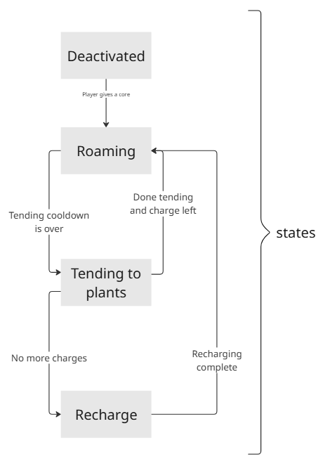
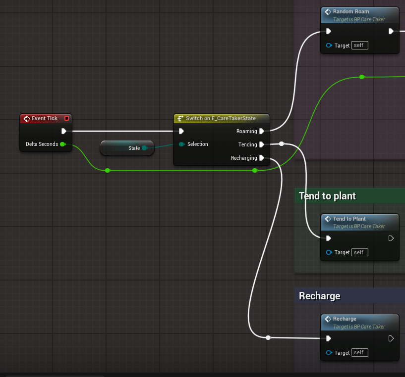
The design of the caretaker changed several times as Jeroen tested it. The first version had no deactivated state and wasn't very good at keeping plants alive. Left the sprint 1 prototype, right the final version.
Tijn built most of our save system, but I handled saving and loading the caretakers since I knew how they worked. The tricky part was that there are two visual variants of the caretaker, set per instance in the level through their dynamic materials, so those had to be saved and restored as well. I also added saving of the player's selected inventory slot, which had been causing Tijn problems.
Tijn built most of the interaction system, and whenever it needed to change I worked on it together with him. Two of my additions ended up being used throughout the whole game.
The player can be in range of several interactables, but only one of them actually responds. I added an interface that tells an actor when it becomes, or stops being, that chosen interactable. Any actor can implement it and react however it wants. This became the hook for all of our diegetic UI: the interact prompt only shows up above the object that will respond.
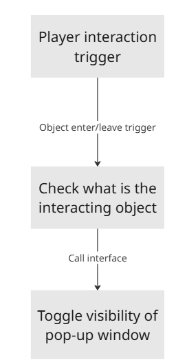
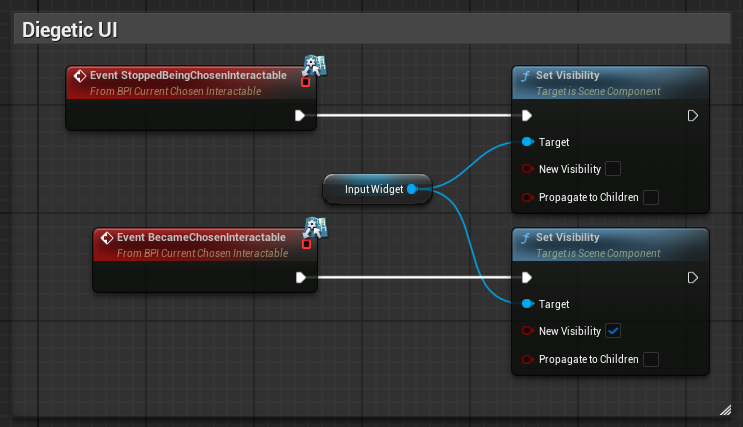
Some objects should only be interactable some of the time. A caretaker, for example, should stop accepting interaction once it has its core. I added a NotInteractable function to the interface that returns false by default, so nothing changed for any existing interactable. Any actor that needs it can override the function with its own logic. The caretaker simply checks whether it is still deactivated.
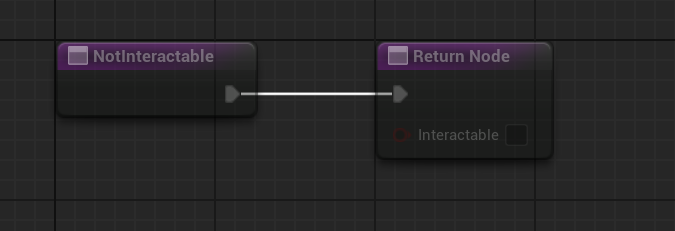
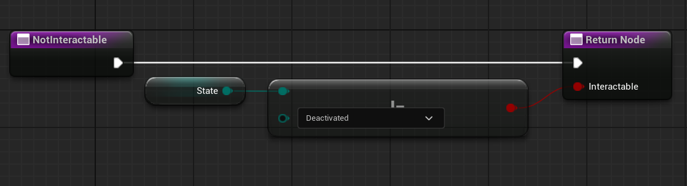
Cores are what the player is working towards, so the ones in the world needed to stand out. I made the core pickup with a flashing light to grab attention, and the core item it adds to the inventory, which is also what activates a caretaker.
Before our first release there was still no way to see your current health. Jeroen suggested at least showing it through the player's light, so I gave the player a flashlight and an emissive red core glow that both dim as their health drops, again using a dynamic material instance.
At the end of sprint 4 all the major blueprints were checked out by other programmers. Instead of waiting, I picked up a low priority task to help the visual artists: making every candle and lantern in the level flicker based on a timeline curve.
Bloom had the best communication of any team I had been in so far. On lab days people would just walk over to each other with questions or work to show, and on other days the programmers were nearly always available in a voice call. I worked closest with Jeroen and with Rina, Karin and Lucas from visual art to keep track of the progress on every plant.
The eye plant is a good example of why that mattered. Jeroen wanted it to fire sooner and have a longer cooldown, and passed this on to Rina, who made a new attack animation. When I put it in engine, it turned out Rina and I had two different ideas of how the attack worked. We sat down together, agreed it would be one big pulse with a small build-up to signal it was coming, and I explained the timing Jeroen was after. Rina adjusted the animation quickly and it turned out great in game.
Working in blueprints with Perforce had its own challenge. Blueprints can't be merged, so big ones like the player character were often checked out while someone else needed them. Whenever that happened I messaged the person to ask how long they needed it, and when several of us were waiting I set up a queue based on how long each change would take. That way nobody sat around waiting, and I always knew when I could pick my main task back up.
Halfway through the project a lot of my work depended on a decision that hadn't been made yet: how the switch between day and night would actually work. The idea had been scaled down in sprint 1 and then left alone for an entire sprint. So I called a meeting with everyone involved, kept it on track, and pulled in more people as we realised they were affected too. By the end everyone knew what we were building, and that decision is what reshaped the water and fruit systems above.
We also held build reviews, where the team played the latest build on the big screen and called out every issue they saw. I ran the one in week 6. Each review produced a long list of small action points, and I claimed every one I knew how to fix. Besides programming bugs I also flagged missing textures, clipping objects and level design issues.
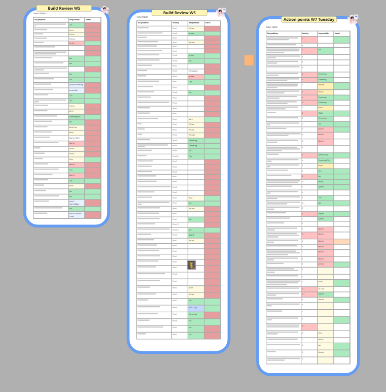
Finally, I helped get Bloom out there. Together with Flemming I uploaded our first build to itch and set up the page, and later I pushed the second version and wrote its changelog. I also suggested starting an Instagram account for the game, to share the team's work and build a small audience.
Almost every plant and caretaker feature went through several rounds of design changes. Water drained over time, then only outside. The face plant got a second hit, then lost it again. Because every growth stage was its own blueprint and most behaviour was driven by values on that blueprint, most of those changes were a quick tweak instead of a rewrite, and designers could make a lot of them themselves. Iteration is going to happen either way, so the systems should make it cheap.
The eye plant animation worked out in the end, but it would have been faster if Jeroen, Rina and I had sat down together
before any work started, instead of passing the request along.
The same goes for the day and night decision. A missing decision doesn't just block one person,
it quietly blocks everyone whose work depends on it.
So when my work has to fit together with someone else's, I sit down with them first and make sure we both understand what we are making.
On my previous Unreal project I wrote my systems in C++, so this was the first time I worked in blueprints with a full team.
Since blueprints can't be merged, the team only works smoothly with good communication.
Let people with small changes go first, submit a blueprint as soon as you no longer need it,
and when several people need the same one, agree on an order.
Helping other programmers fix their bugs also turned out to be very valuable.
It meant I understood their blueprints too, which made it a lot easier to change them when I needed to.
Looking back, Bloom was heavily over-scoped. We cut a few things,
but mostly we went for the game we had in mind because we loved it so much, and that caused crunch.
I crunched a lot myself, so in the second peer review I asked the team directly whether that bothered anyone.
The answer was that it motivated some people, but it put pressure on others,
who then felt they hadn't done enough compared to the people who did crunch.
After that I scaled it back and stopped sharing work I did late at night until the next morning.
In future projects I want to bring up crunch with the team as soon as it starts happening,
and push for scaling down early, so it isn't needed in the first place.
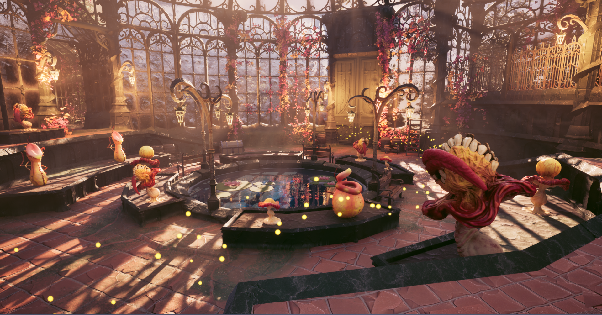